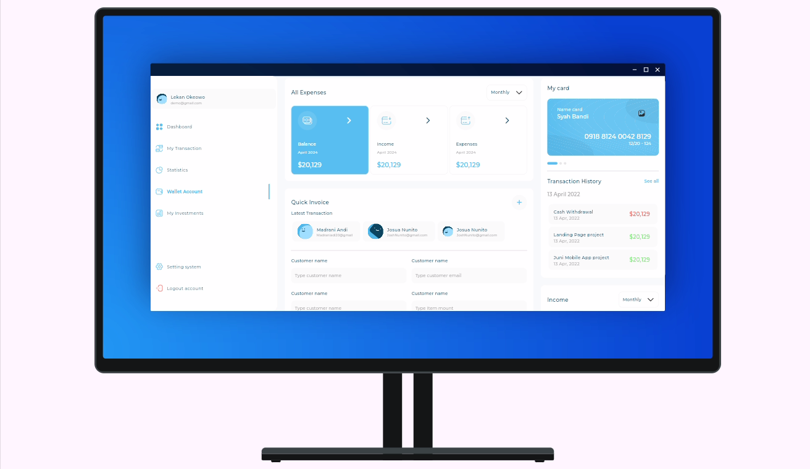
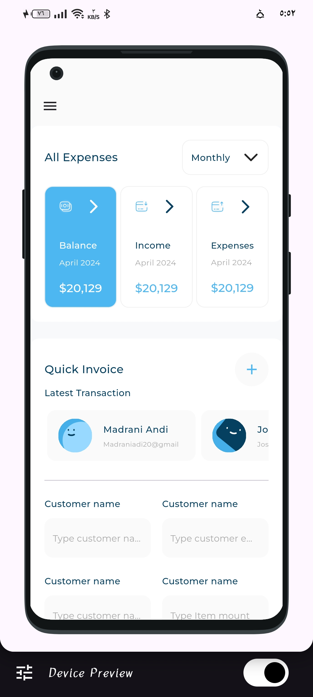
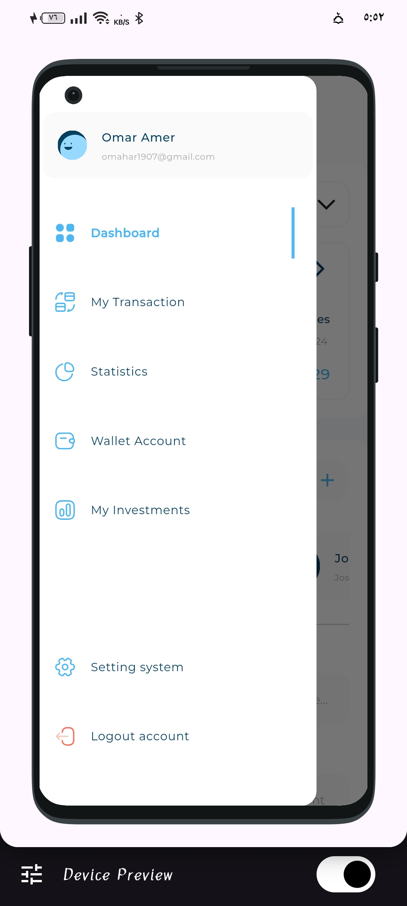
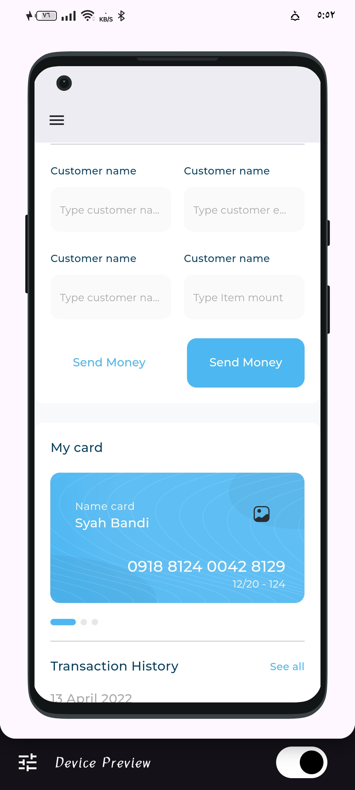
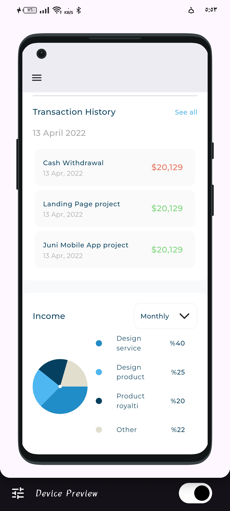
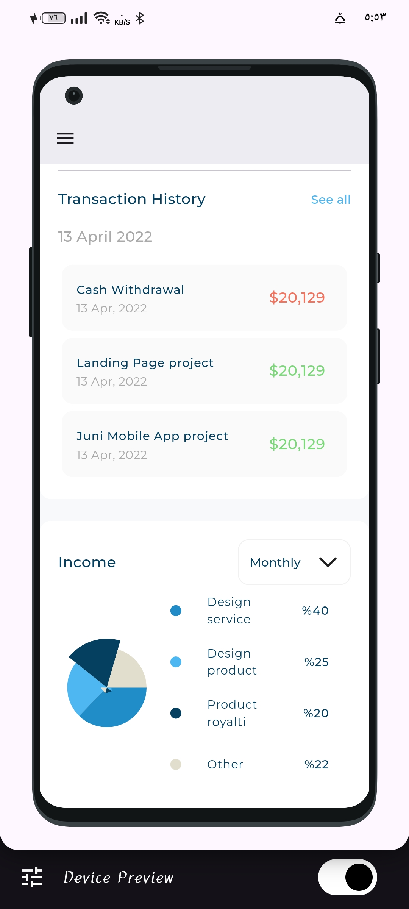

Responsive & Adaptive Dashboard

Overview
This project showcases a fully responsive and adaptive dashboard built using Flutter. The dashboard adjusts seamlessly to different screen sizes, ensuring optimal user experience on both mobile and desktop platforms. It features modern design principles and an intuitive layout for displaying and interacting with complex data.
Features
- Adaptive design for mobile, tablet, and desktop screens
- Interactive charts and graphs
- Real-time data updates
- Customizable widgets for user preferences
- Dark mode and light mode toggle
- Clean and modern UI/UX
Technologies Used
- Flutter for cross-platform development
- Dart programming language
- Provider for state management
- Chart.js for interactive charts
- Firebase for real-time data updates
- Adobe XD for UI/UX design
Project Gallery





Project Video
GitHub Repository
View the source code on GitHub: Responsive & Adaptive Dashboard GitHub Repository
Conclusion
This project demonstrates advanced skills in responsive design and data visualization. The dashboard adapts fluidly across devices while providing an engaging and user-friendly experience. Built with Flutter, it showcases the power of cross-platform development and real-time data integration.
Back to Portfolio